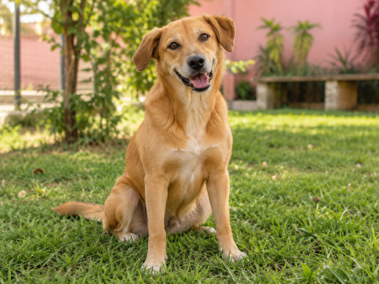
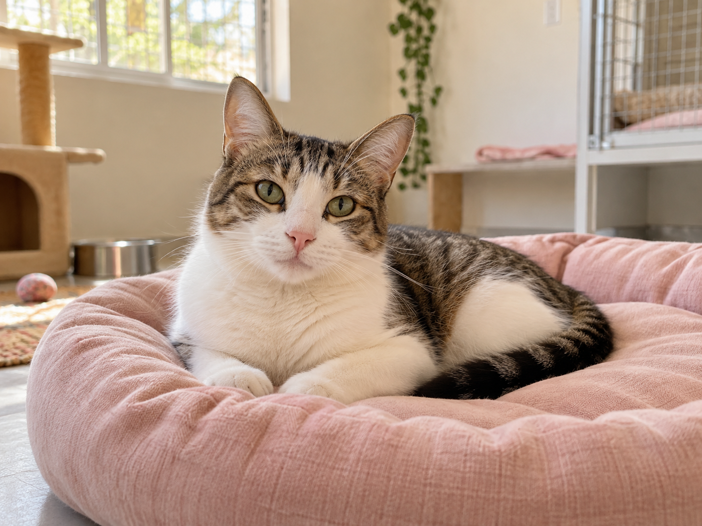
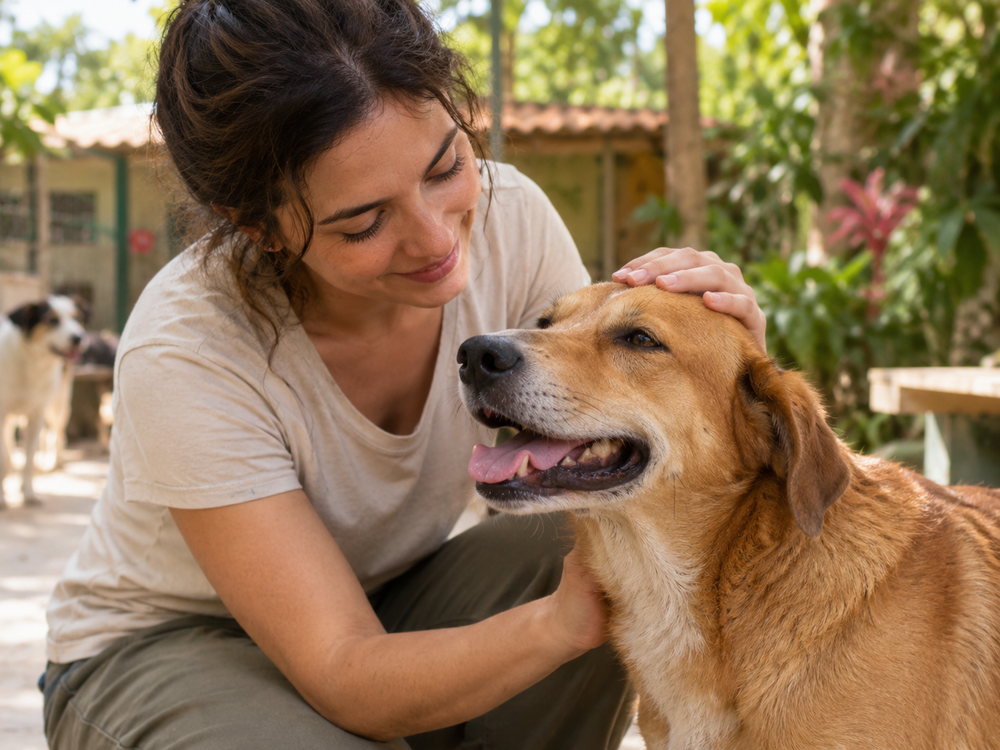

Aproximar para transformar
Incentivar a adoção responsável e o cuidado com cães e gatos, aproximando animais e pessoas dispostas a oferecer um lar seguro e acolhedor.
Acreditamos no encontro entre quem precisa de um lar e quem tem amor para oferecer. Nossa causa é aproximar pessoas e animais por meio do acolhimento e da adoção responsável.
O Abrigo Amigo nasceu como um projeto acadêmico inspirado no trabalho de pessoas que acolhem e protegem animais em situação de abandono.
Nossa proposta é usar a tecnologia para dar visibilidade à causa animal, facilitar a busca por um companheiro e incentivar escolhas conscientes na hora de adotar.
Acreditamos que toda transformação começa com cuidado. Por isso, valorizamos o respeito aos animais e o compromisso de oferecer segurança, saúde e companhia durante toda a vida.
Incentivar a adoção responsável e o cuidado com cães e gatos, aproximando animais e pessoas dispostas a oferecer um lar seguro e acolhedor.
Contribuir para uma comunidade que respeite os animais, combata o abandono e reconheça a adoção como um compromisso para toda a vida.
Nossos valores orientam a forma como pensamos o acolhimento e a adoção.
Cada animal tem sua história, seu tempo e suas necessidades. Toda vida merece dignidade.
Adotar envolve alimentação, saúde, segurança e presença em todas as fases da vida.
Informações claras ajudam a criar expectativas realistas e decisões conscientes.
Animais idosos, tímidos ou com necessidades especiais também merecem uma nova oportunidade.
Considere a idade, o porte, a personalidade e as necessidades do animal.
Pense na sua rotina e nos cuidados que você poderá oferecer ao seu novo companheiro.
Planeje um ambiente seguro e uma adaptação tranquila, com paciência e carinho.
Cuidado, companhia e acolhimento fazem parte da história que queremos construir.



Nosso espaço foi pensado para representar um ambiente de proteção, respeito e atenção aos animais.
Confira a localização e os horários ilustrativos de atendimento.
Unidade ilustrativa · Endereço e horários fictíciosAbrigo Amigo · Projeto acadêmico fictício. As informações de funcionamento e localização são ilustrativas.